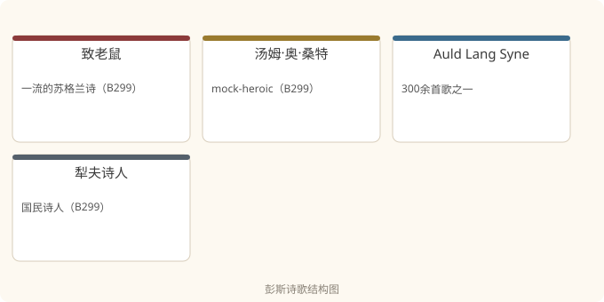

彭斯诗选
一、基本信息
| 作者 | 罗伯特·彭斯 |
|---|---|
| 成书/出版 | 1786年7月31日基尔马诺克版（Britannica：Poems, Chiefly in the Scottish Dialect appeared July 31, 1786 (Kilmarnock)） Robert Burns — Encyclopaedia Britannica（百科全书） |
| 国别/地区 | 英国 |
| 时代 | 近代 · 18世纪 |
| 体裁 | 诗选集 |
| 语言 | 苏格兰方言/英语 |

彭斯诗歌结构图（主题·结构图）
二、创作背景
Britannica（B299）：'Robert Burns is considered the national poet of Scotland'（苏格兰国民诗人）；首版含 To a Mouse、The Holy Fair 等'a handful of first-rate Scots poems'；'Tam o' Shanter'（1791）为 mock-heroic 名篇（B299）；'contribution to over three hundred songs'（含 Auld Lang Syne）；'Ploughman Poet'；为辑录改写民歌拒酬（B299）。
基尔马诺克版成功（B299）：'Simple country folk and sophisticated Edinburgh critics alike'皆赞誉。
三、内容脉络
苏格兰方言诗：致老鼠、致虱子、圣游、汤姆·奥·桑特（B299）+ 歌曲（Auld Lang Syne——通说）。
四、主要人物表
| 人物 | 身份 | 说明 |
|---|---|---|
| 彭斯 | 犁夫诗人 | 'Ploughman Poet'（B299） |
五、主题与艺术特点
- 苏格兰方言的诗性（B299）。
- 民歌的辑录与改写（B299：over three hundred songs）。
- 农民的讽刺与抒情（通说待核）。
六、影响与评论
- Britannica：'considered the national poet of Scotland'；Auld Lang Syne（B299）。
Robert Burns — Encyclopaedia Britannica（百科全书） - Britannica：'country folk and Edinburgh critics alike'的双重赞誉（B299）。
Robert Burns — Encyclopaedia Britannica（百科全书）
七、阅读建议
难点
- 苏格兰方言的读音。
- 民歌曲调的对应。
- 《彭斯诗选》（人民文学出版社袁可嘉译本，通说待核）。
- 英文原版（公有领域）。
先《致老鼠》《一朵红红的玫瑰》→《汤姆·奥·桑特》。
八、待核实
- 《一朵红红的玫瑰》1794年出处核对。
- 彭斯之夜（1月25日）待核。
- 袁可嘉译本信息待核。